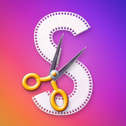
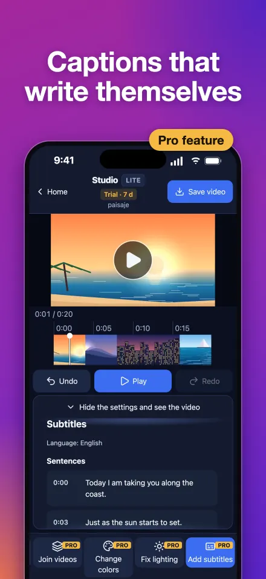
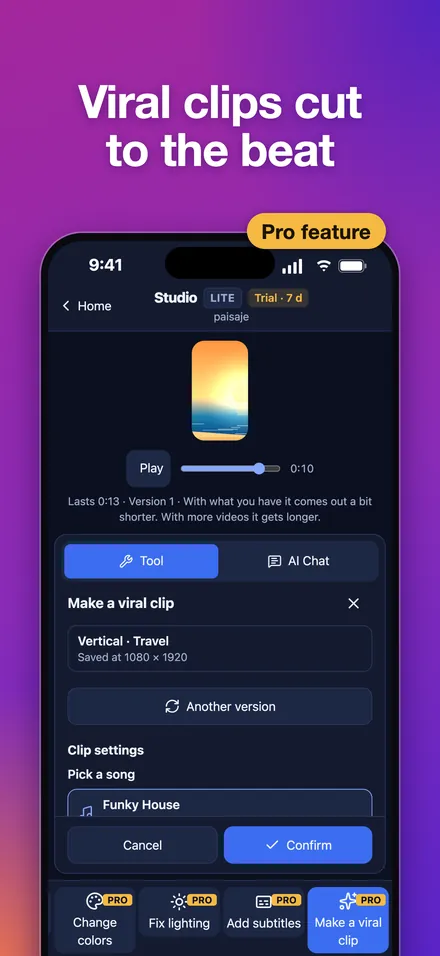
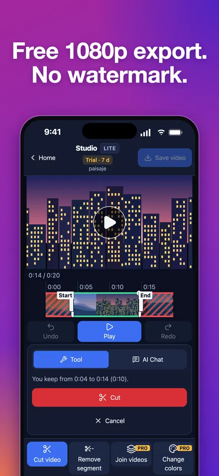
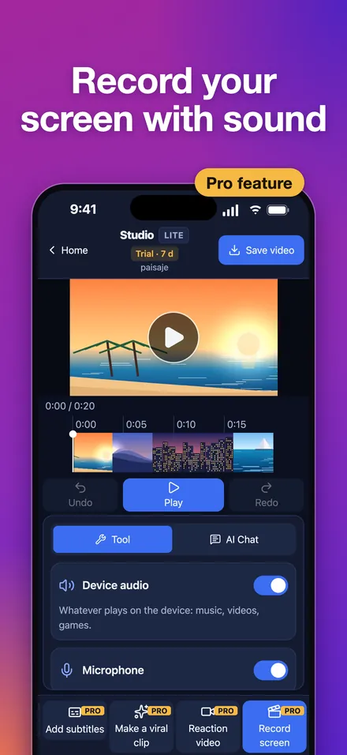

Studio: easy video editing, professional results
Auto captions, viral clips cut to the beat and screen recording on iPhone, iPad, Mac and Windows
Updated
iPhone, iPad and Mac on the App Store · Windows 10 or 11 PC on the Microsoft Store
What Studio is
Studio is a video editor that also records your screen, for iPhone, iPad, Mac and Windows (10 and 11). It is easy to use and gives a professional finish: captions that write themselves, vertical viral clips cut to the beat of the music, one-tap color and lighting fixes, and screen recording with sound.
Trimming a video and saving it as MP4 up to 1080p is free, with no watermark and no length limit. Studio Pro costs $1.99/month or $12.99/year in the US (1.99 €/14.99 € in Spain), and every Pro tool is free for 7 days after you install, no card needed.
Screenshots




What you get
- Captions that write themselves: from what is said, in 20 languages, created on your device. Edit any line and export an .srt file too.
- Viral clips: turn your travel footage into a vertical 9:16 clip with auto framing, cuts on the beat and royalty-free (CC0) music included. Five styles: Landscape, Travel, Luxury, Beach and City.
- Trim for free: mark the part you don't want with two handles, check the preview and confirm. Export as MP4 up to 1080p, with no watermark and no length limit.
- Record your screen: with device audio and your mic; when you stop, the recording opens in the editor.
- Change colors: in one tap: auto enhance or six looks (Warm, Cinema, Vivid, Cool, Black and white, Sunset). Press and hold to see the before.
- Fix lighting: recovers blown-out highlights and brightens dark scenes, shot by shot.
- Reaction videos: you on camera in the corner while the video plays.
- Thumbnails that stand out: Studio suggests the best frames and you add big text, in YouTube (1280×720), vertical or square size. Or create one with Gemini.
- Merge videos into one: drag them into order and export a single video.
- Use your own AI: add the API key of the AI you already pay for (Claude, OpenAI, Gemini or a compatible service), then describe the edits in your own words, get titles and hashtags for social media or translate your captions. With a Gemini key, it also creates the thumbnail with AI.
Free, Pro and ads
| iPhone and iPad | Mac | Windows | |
|---|---|---|---|
| Free forever | Open, trim, save up to 1080p and share, with no watermark | Same | Same |
| Trial on install | Every Pro tool for 7 days, no card and no ads | Same | Same (needs internet to activate) |
| Studio Pro | $1.99/month or $12.99/year in the US | The same subscription as on iPhone and iPad | Separate subscription in the Microsoft Store |
| Ads without Pro | A banner, a full-screen ad on 1 in 5 app launches and another when you save a video | None | None |
| One tool for a while | A fully watched rewarded ad unlocks it for 20 minutes; each extra ad adds 20 more | With the trial or Pro | The PC shows a QR code: scan it with Studio on your iPhone, watch the full ad and that tool unlocks for 20 minutes on the PC |
| Use your own AI | Doesn't need Pro; anything it does with a Pro tool needs Pro or that tool's ad | With Pro | With Pro |
Prices shown are for the US (1.99 €/month or 14.99 €/year in Spain); other countries see their local price in the store before paying. Pro also lets you save above 1080p where your device supports it.
The subscription renews automatically unless canceled at least 24 hours before the end of the period, and you manage it in your Apple or Microsoft account. When the trial ends you keep the free tools and nothing is charged.
Your AI provider bills you for what you use: Studio does not charge for it.
Platforms and requirements
- iPhone and iPad: iOS and iPadOS 16.4 or later, on the App Store.
- Mac: macOS 14 or later, on the App Store (Apple silicon or Intel Macs).
- PC: Windows 10 (version 2004) or Windows 11, on the Microsoft Store. Open your videos from File Explorer with “Open with” > Studio.
- Android: not yet; it is coming later.
- App languages: English and Spanish. Auto captions recognize 20 languages.
Your video stays yours
Studio edits on your device and does not upload your videos to its servers. Captions are created on the device itself. With “Use your own AI”, your requests go straight from your device to your provider, with your key. This page uses no cookies or tracking. Full details in the privacy policy.
What Studio does not do
- It does not remove watermarks from other people's videos.
- It does not download videos from social media.
- It does not include copyrighted songs: the viral clip music is royalty-free (CC0).
- It is not on Android yet.
Frequently asked questions
Is there a free video editor with no watermark?
Yes. In Studio, trimming a video and saving it as MP4 up to 1080p is free, with no watermark and no length limit, on iPhone, iPad, Mac and Windows.
How do I add auto captions to a video?
Open the video in Studio and tap “Add subtitles”. Captions write themselves from what is said, in 20 languages, created on your device: the audio is not sent to any server. Edit any line and export an .srt file. It is a Pro tool.
How do I record my Mac screen with audio?
In Studio for Mac, tap “Record screen” and keep “Device sound” and “Microphone” on. When you stop, the recording opens in the editor. It is a Pro tool.
How do I screen record on Windows 11?
Get Studio from the Microsoft Store, tap “Record screen” and choose what to record. It records PC sound and your mic, and it also works on Windows 10. It is a Pro tool.
How do I merge several videos into one on my phone?
In Studio, pick several videos when opening or use “Join videos”, drag them into order and save: you get a single video. It is a Pro tool.
How do I make a vertical clip with copyright-free music?
Use “Make a viral clip”: Studio builds a vertical 9:16 video with auto framing, cuts on the beat and a royalty-free (CC0) song included. Five styles: Landscape, Travel, Luxury, Beach and City.
How do I make a YouTube thumbnail with AI?
In “Create thumbnail”, Studio suggests the best frames and you add big text at 1280×720. With your Gemini key in “Use your own AI”, the AI creates it inside the app; or create it with Gemini in your browser.
How do I fix the lighting and color of a dark video?
“Fix lighting” brightens dark shots and recovers blown-out highlights, shot by shot. “Change colors” gives you auto enhance and six looks. Pure white areas cannot be recovered, only softened.
How much does Studio Pro cost?
$1.99/month or $12.99/year in the US, and 1.99 €/month or 14.99 €/year in Spain; other countries see their local price in the store. Every Pro tool is free for 7 days after you install, no card needed, and when it ends you keep the free tools and nothing is charged.
Can I use a Pro tool without subscribing?
Yes. On iPhone and iPad, a fully watched rewarded ad unlocks that tool for 20 minutes, and each extra ad adds 20 more. Windows has no ads: the PC shows a QR code, you scan it with Studio on your iPhone, watch the ad there and the tool unlocks for 20 minutes on the PC. On Mac, Pro tools come with the 7-day trial or with Pro.
Do I need video editing experience to use Studio?
No experience needed: you see each change instantly, you can always undo, and the tools do the hard work (captions, cuts on the beat, light and color). The result has a professional finish.
Does Studio upload my videos?
No. Studio edits on your device and does not upload your videos to its servers. Only if you use “Use your own AI” do your requests go straight from your device to your AI provider, with your key.
Do I need to keep the app updated?
Some updates are required to keep using it; if one is, the app tells you and takes you to the store.
Questions, bugs or ideas: gabrielmicovictoria@gmail.com.
Help and support · Privacy policy · Español